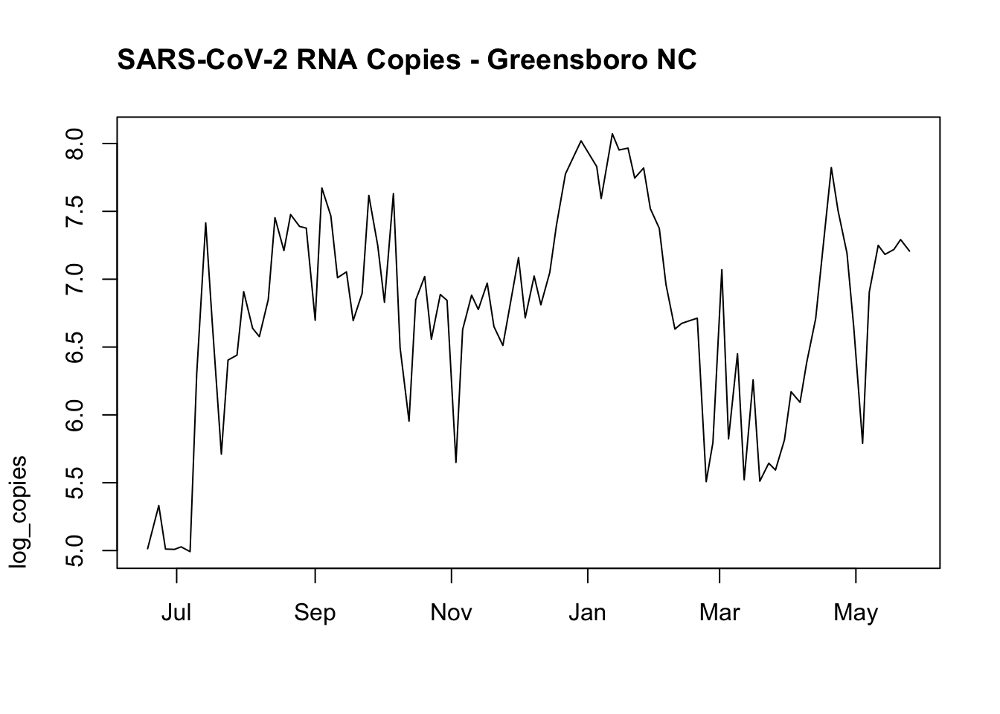
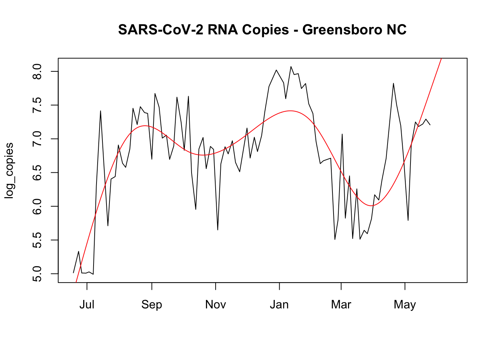
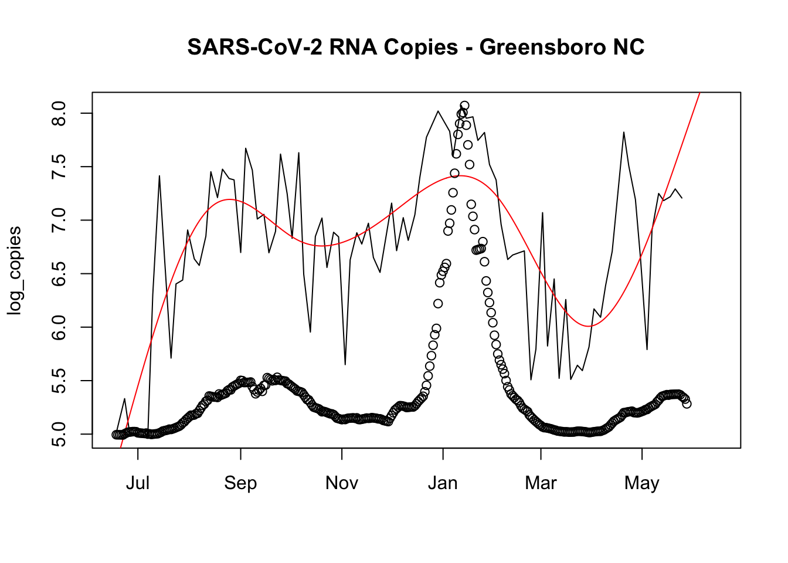
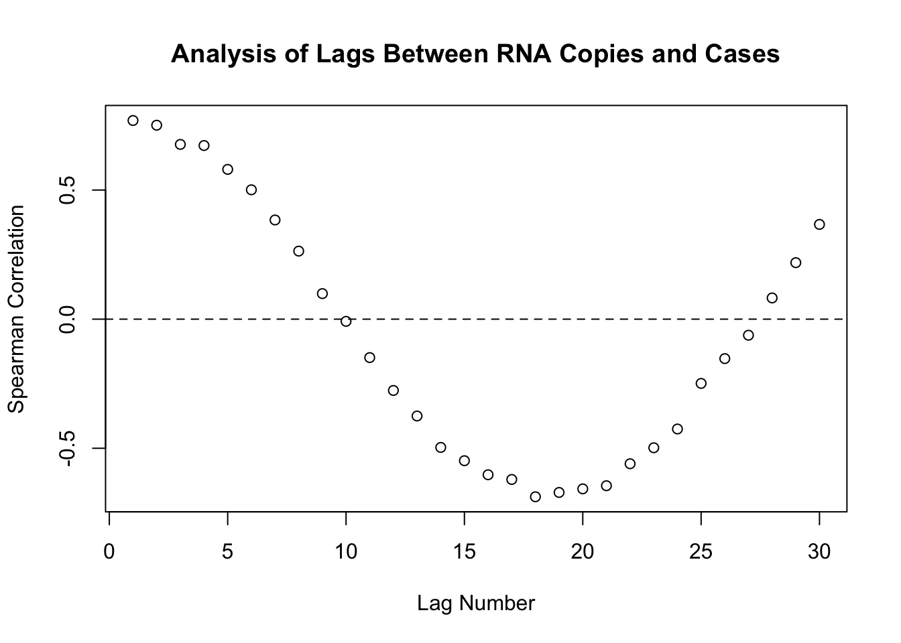

NCDHHS has been participating in waste-water surveillance for SARS-CoV-2. Unfortunately, there is some delay in the data (posted weekly and what is posted is generally a week old or more).
I just want to explore if there is any predictive power. First, I’ll pull the data down and plot it for Greensboro, NC.
library(data.table)dat <-fread("https://raw.githubusercontent.com/conedatascience/covid-data/master/data/timeseries/waste-water.csv")o <- dat[grepl(pattern ="Greens", wwtp_name)]o[,date_n:=as.numeric(date_new)]o[,log_copies :=log10(sars_cov2_normalized)]o <- o[!is.na(log_copies)]plot(log_copies~date_new, o, type ="l", adj =0, xlab ='', main ="SARS-CoV-2 RNA Copies - Greensboro NC")

Now I’m going to get into dangerous territory and fit a Bayesian spline to these data and then predict out to look at the trend.
library(mgcv)
Loading required package: nlme
This is mgcv 1.8-36. For overview type 'help("mgcv-package")'.
fit <-bam(log_copies ~s(date_n, k =7, bs ="cs"), data = o)
Warning in seq.default(0, 1, length = nk): partial argument match of 'length' to
'length.out'
Warning: partial match of 'scale.est' to 'scale.estimated'
Warning in model.matrix.default(Terms[[i]], mf, contrasts = oc): partial
argument match of 'contrasts' to 'contrasts.arg'
plot(fit)
Warning in seq.default(min(raw), max(raw), length = n): partial argument match
of 'length' to 'length.out'
Warning in model.matrix.default(Terms[[i]], mf, contrasts = oc): partial
argument match of 'contrasts' to 'contrasts.arg'
plot(log_copies~date_new, o, type ="l", xlim =c(min(o$date_new), Sys.Date()+14), xlab ='', main ="SARS-CoV-2 RNA Copies - Greensboro NC")lines(pred_matrix$date, pred_matrix$pred, col ="red")

So it appears that there will be an increasing amount of RNA in the wastewater in Greensboro.
For fun (because of the reporting delay) I will plot the rolling average cases on this same plot. We can see that the cases did in fact increase, but much more rapidly than our projection would have suggested.
guilford_cases <- guilford_cases[date>=min(o$date_new)]plot(log_copies~date_new, o, type ="l", xlim =c(min(o$date_new), Sys.Date()+14), xlab ='', main ="SARS-CoV-2 RNA Copies - Greensboro NC")lines(pred_matrix$date, pred_matrix$pred, col ="red")par(new =TRUE)plot(cases_daily_roll_sum~date, guilford_cases, xlab ="", ylab ="",xlim =c(min(o$date_new), Sys.Date()+14),axes =FALSE)

In this next section I was curious if there was a strong cross-correlation with a particular lag. In theory it would be nice if we could say that we see RNA copies increasing and that gives us an alert some period before we see cases. This way health systems could prepare.
cor_list <-list()for(i in1:30){ d <-copy(o)[,lag_cases:=shift(x = cases_new_cens_per10k, i, type ="lead")][!is.na(lag_cases)] cor_list[[i]] <-with(d, cor(lag_cases,log_copies, method ="spearman"))}overall_cor <-do.call(rbind, cor_list)plot(1:30, overall_cor, main ="Analysis of Lags Between RNA Copies and Cases",ylab ="Spearman Correlation", xlab ="Lag Number")abline(h =0, lty ="dashed")

For this analysis it seems that there isn’t any large warnings…with the highest correlation being a 1 day lead. However there could be a rough 1-4 day advanced warning. Nothing too long term warning as what others have suggested.
![]()